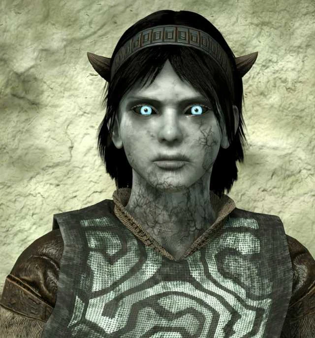

.png)
|
Wander e seu cavalo Agro - navegando por um caminho implacável na beira de um desfiladeiro. Os dois viajam há muito tempo nesse caminho incomum, através de florestas escuras e pradarias úmidas. Finalmente chegam ao seu destino: um portão de pedra alto com uma passagem estreita. Do outro lado, encontra-se uma enorme ponte de construção quase sobrenatural. A ponte se estende sobre as Terras Proibidas, uma paisagem dramática de planícies e desfiladeiros com ambientes fechados e cortados, variando de desertos áridos a fendas com gêiseres altos a florestas escuras e fendas escuras. A ponte finalmente chega ao fim no Santuário de Adoração, uma estrutura gigantesca no meio das terras. |
|
Wander e Agro seguem para o térreo e o salão principal do templo, repleto de dezesseis pedras ídolos. No final do salão vazio há um altar. Aqui é mostrado que Wander está carregando algo com ele: um corpo envolto em uma folha de pano. Ele coloca o corpo no altar e tira o lençol, revelando Mono, uma jovem vestida com um vestido branco. Agro de repente fica assustado com um barulho atras deles. Várias aparições sombrias estão emergindo do chão do templo, Wander vê isso e desembainha uma espada misteriosa de sua bainha, apontando-a para as sombras. A lâmina emite uma energia sobrenatural e as criaturas se dissolvem imediatamente no ar. Em seguida, um par de vozes em expansão enche os corredores de uma grande abertura acima, surpreso que Wander possua a "Espada Antiga". Wander identifica corretamente as vozes como pertencentes a Dormin e pede que Mono seja revivida. Inicialmente, Dormin expressa uma indiferença em relação ao assunto, mas, em última análise, não pôde esconder o interesse pela espada que Wander carrega. Observando que "pode não ser impossível" trazer Mono de volta à vida, Dormin faz um acordo: destruir os dezesseis ídolos que revestem as paredes do Santuário e Mono será revivida. A cada vez que Wander mata mais colossos, sua aparência física se deteriora. Sua pele fica mais escura, com linhas escuras se tornando visíveis no rosto e, mais tarde, no pescoço. Seu cabelo, inicialmente um tom ruivo, fica mais escuro. Suas roupas ficam rasgadas e sujas, enegrecidas com o sangue dos gigantes mortos. Sua saúde geral, resistência e força física, no entanto, aumentam com a misteriosa força das trevas coletando dentro dele. Quando apenas quatro colossos permanecem, é revelado que Wander está sendo seguido: uma cena de corte mostra vários cavaleiros parando em uma clareira. Eles são liderados por Lord Emon, que vê a entrada das Terras Proibidas e o topo do Santuário de Adoração no horizonte e diz a seus homens que eles só têm uma curta distância a percorrer. Os guardas de Emon atravessam a grande ponte que atravessa as Terras. Eles abrem a porta do santuário e rapidamente seguem para o salão principal. Há um ídolo deixado alinhando as paredes; enquanto se reúnem ao redor, Emon observa horrorizado enquanto quebra, quebrando o selo que continha o poder de Dormin. Eles correm rapidamente para o altar, onde Emon faz uma oração ao lado do corpo de Mono, quando ouvem um som atrás deles. Wander reapareceu no santuário; os chifres estão visivelmente salientes de sua cabeça, e sua pele ficou sem vida de roxo. A Espada Antiga cai no chão logo depois, alojando-se no chão. |
|
|

|
Emon, em descrença enfurecida, condena Wander por roubar a espada e usá-la para matar os colossos. O xamã ordena que seus homens atirem. Um dos homens de Emon acerta uma flecha em Wander na perna com uma besta e outro caminha até Wander e o empala no peito com a espada. Várias criaturas sombrias emergem do chão e se fundem no corpo até que a sombra cresça para encher o salão inteiro. Dormin foi ressuscitado. Dormin é muito lento para persegui-los, e eles escapam. Antes de deixarem o Santuário, Emon pronuncia um encantamento e joga furiosamente a espada na poça rasa de água na parte de trás do Santuário. A água acende e se torna um vórtice, retirando a essência de Dormin de Wander até que apenas sua sombra permaneça. Wander também é sugado para a piscina. De volta ao salão do santuário, Dormin manteve sua promessa a Wander, pois Mono recebeu uma nova vida. Ela se senta e olha em volta para seu ambiente desconhecido. Pouco depois, Agro manca o Santuário, tendo sobrevivido milagrosamente à queda. Os dois caminham para a bacia na parte de trás do santuário. A água agora se foi, mas em seu lugar há um menino com chifres na cabeça. Mono pega a criança enquanto Agro volta pela espiral até a entrada norte do Santuário. Quando os dois saem pela porta dos fundos, percebem que a ponte foi destruída e, embora não haja saída, Agro encontra outro caminho que leva mais alto ao Santuário. No final do caminho, eles encontram um jardim com várias criaturas vivendo nele, incluindo algumas pombas, um esquilo e uma jovem corça, além de árvores frutíferas. |
Tonhão Wiki
Achou algum erro nos fale por aqui contato
Aproveite sua leitura.